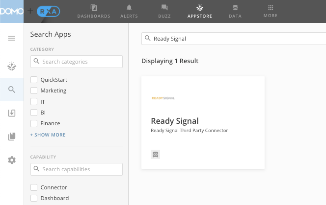
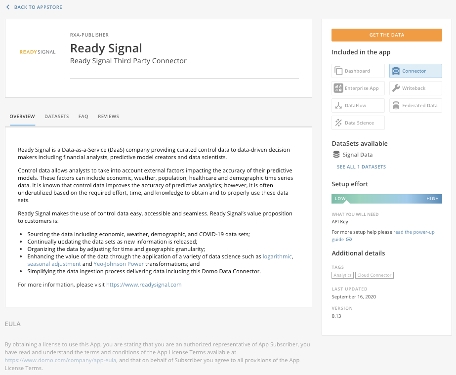
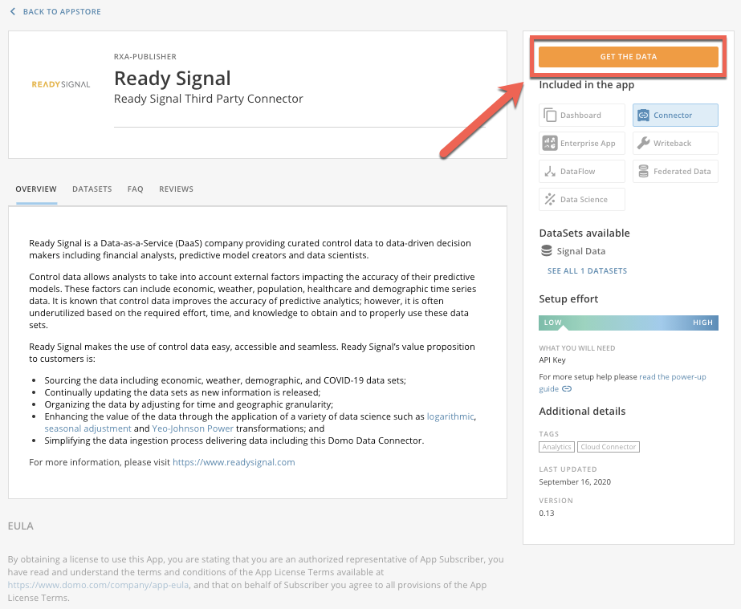
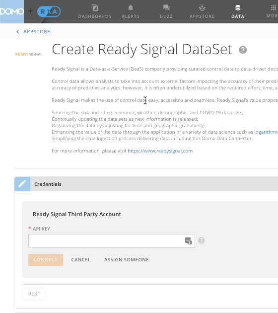
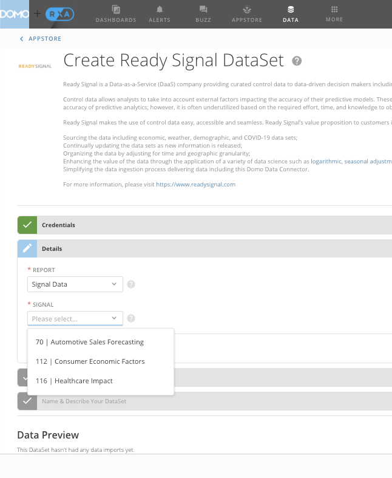
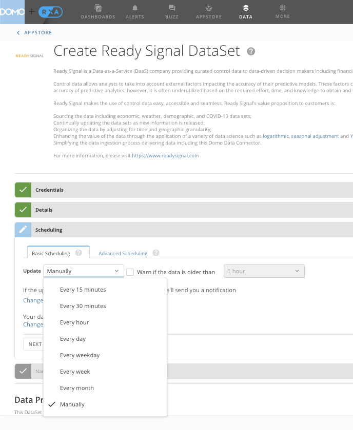
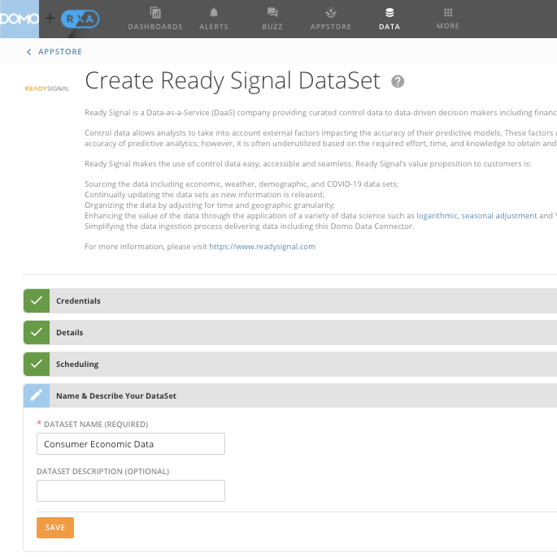

Domo Data Connector
Step 2: If a Signal was previously created, select the "gear" button to show the
details of the Signal

Step 3: Click Output

Step 4: Copy the Domo Data Connector API Key and note the Signal ID (70)

Step 5: Log into Domo
Step 6: Select APPSTORE from the Domo Header Menu
Step 7: Search "Ready Signal" in the header search tool

Step 8: Click the Ready Signal Third Party Connector

Step 9: Click GET THE DATA

Step 10: In Credentials, select Add Account, which will ask for the API KEY

Step 11: Once the API KEY is input, select CONNECT, then select a SIGNAL and NEXT

Step 12: Select desired Scheduling

Step 13: Name and Save the Dataset

Step 14: Use of Ready Signal in Domo

Please visit https://www.domo.com/ for more information about Domo and their data connectors.